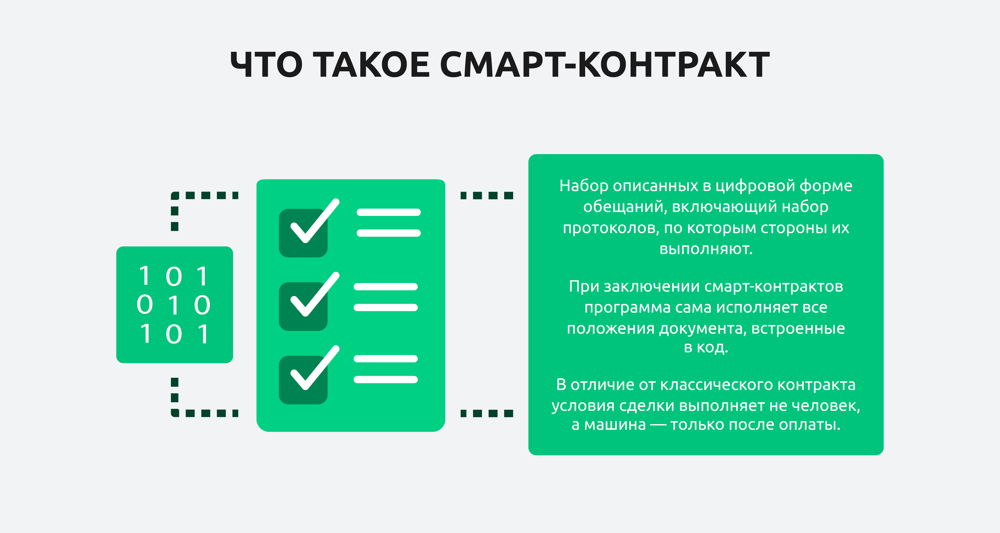
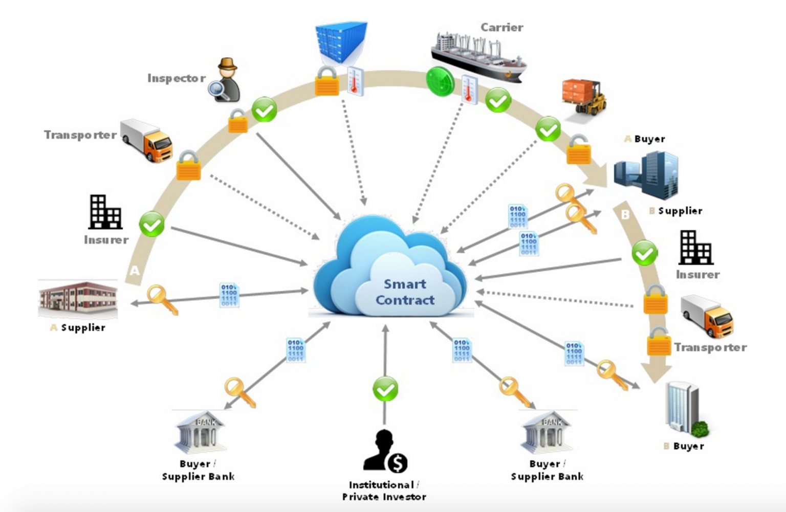
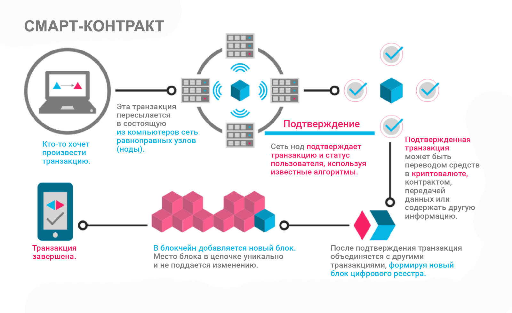

Смарт-контракты в логистике
Смарт-контракт — это решение на основе блокчейна, которое позволяет автоматизировать юридическую привязку соглашений в цепочке поставок. Смарт-контракты позволяют компаниям отслеживать этапы логистического процесса и обеспечивать соблюдение заранее оговорённых правил транзакции, снижая риск того, что другая сторона не выполнит соглашение. Это особенно эффективно, позволяя небольшим и менее устоявшимся компаниям без ранее существовавшей репутации или рекомендаций, например, стартапам, присоединиться к сектору цепочки поставок.

Как смарт-контракты применяют в логистических компаниях?
По существу, среда блокчейна предоставляет безопасность, сохранность и неизменяемость, в которой исполняется код СК, а сам СК является доверительным протоколом исполнения бизнес-процесса. В логистике смарт-контракты используются для:
– проведения аукционов среди поставщиков товаров и услуг, чтобы обеспечить независимое определение победителя и зафиксировать результаты торгов;
– контроля информационного обмена с объектами интернета вещей (IoT) и реагирования путем подачи сигнала в момент нарушения параметров объекта IoT, установленных в СК;
– организации электронного документооборота перевозочных документов (альтернатива использованию технологии цифровых подписей для фиксации каждого этапа процесса перевозки в блокчейн);
– проведения расчетов между заказчиком и исполнителем перевозки по факту ее исполнения в строгом соответствии с условиями оплаты по договору;
– автоматизации информационного обмена и последующего перемещения запасов в цепях поставок.

Какие задачи решаются с помощью смарт-контрактов?
Ценность смарт-контракта с применением технологии блокчейн заключается в обеспечении строгого следования заданной схеме бизнес-процесса, автономности выполнения алгоритма СК, прозрачности операций и, как следствие, возможности подтверждения достоверности событий.Исходя из особенностей применения, смарт-контракты позволяют решать следующие задачи:
– построение бизнес-процессов без посредников, участники которых могут иметь разнонаправленные задачи;
– обеспечение безопасности и устойчивости функционирования цепей поставок;
– обеспечение прозрачности операций в цепи поставок без возможности внесения несанкционированных корректировок в данные;
– информирование участников логистических процессов о движении товаров и документов в цепях поставок.

Какие есть нерешенные на данный момент проблемы и ограничения использования смарт-контрактов в логистике
Применение СК сдерживается развитием самой технологии блокчейна. Она сталкивается с проблемами масштабируемости, роста цены транзакции и недостаточной скорости у публичных блокчейнов, таких как Bitcoin или Ethereum.Для решения таких проблем, разрабатываются cross chain платформы (например, Polkadot, Cosmos, Thepower), где можно создавать отдельные блокчейны (их еще называют парачейн), которые взаимодействуют как друг с другом, так и с внешними сетями.
Cross chain платформы решают «болячки» публичных блокчейн-сетей и дают возможность построения бизнес-приложений, таких как, например, Tradelens, ZIM, Provenance, Nyshex или Dilex Global. Бизнес-приложения взаимодействуют с клиентом как через СК внутри приложения, так и вовне с другими СК из окружения в сети. Это создает, в свою очередь, возможность построения нового Web 3.0, где рутинные процессы логистики можно безопасно передать на управление СК, который круглосуточно в автономном режиме будет отрабатывать заложенную в них логику.